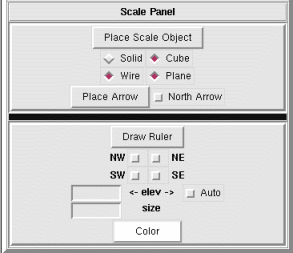

NVIZ Reference Manual
CONTENTS
Decorations and Scale Panel
The Decorations and Scale panel lets you place scale objects and/or a
north arrow in the NVIZ viewer.
-

OPTIONS
- Place Scale Object
- This option is not yet implemented.
Use one of the next four options to set the type of Scale
object.
-
-
- Solid
- This option is not yet implemented.
- Cube
- This option is not yet implemented.
- Wire
- This option is not yet implemented.
- Plane
- This option is not yet implemented.
- Place Arrow
- Places a north arrow in the NVIZ viewer. You click in
the NVIZ viewer to place the arrow.
- North Arrow
- Activates the automatic redrawing of the north arrow.
NOTE: The North arrow is automatically scaled according to
scene size and zoom level. There are still some bugs in the scaling which
can result in over or under sized arrows.
- Draw Fringe
- Draws a fringe shadow or "flower box" around base of elevation map.
Click to enable the fringe.
The solid "flower box" fringe is a work in progress.
-
-
- NW
- Draw fringe along North and West sides.
- NE
- Draw fringe along North and East sides.
- SW
- Draw fringe along South and West sides.
- SE
- Draw fringe along South and East sides.
- Elev
- This option is not yet implemented.
- Auto
- This option is not yet implemented.
- Size
- This option is not yet implemented.
- Color
- This option is not yet implemented.